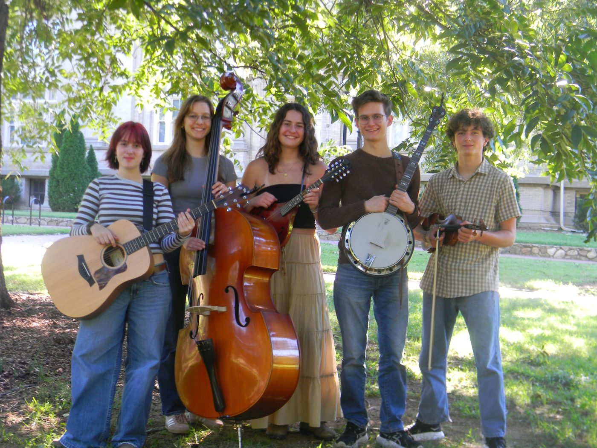
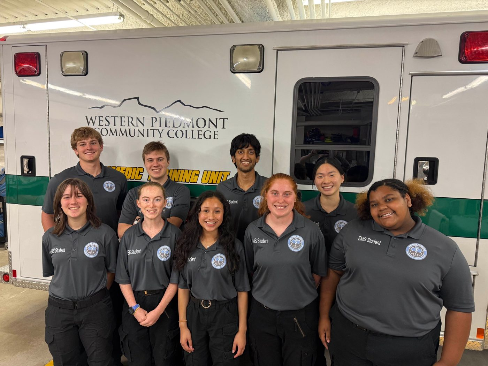
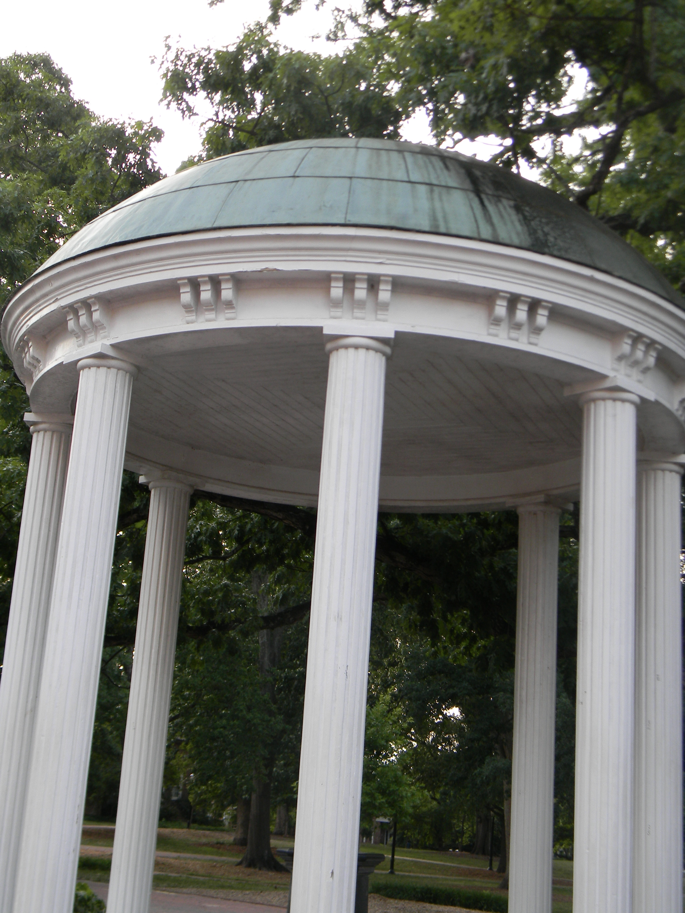

Music
I play in the Carolina Bluegrass Band and in my own band, Tiny Cowboy. Find us on Instagram!
"The excitement of learning separates youth from old age. As long as you're learning you're not old." ~ Rosalyn Sussman Yalow
Hi, I’m Adelaide. I’m a first-year biology major at UNC–Chapel Hill, from Asheville. I’m headed toward clinical research on Type One Diabetes and forensic science, I work as an EMT, and I play music whenever I can. Here’s a look at what I’m up to.

I play in the Carolina Bluegrass Band and in my own band, Tiny Cowboy. Find us on Instagram!

I’m an Event EMT with Buncombe County Rescue Squad, working as a medic at concerts in downtown Asheville.

I’m planning clinical research on Type One Diabetes and a future in forensic science, with medical examiner as the long-term goal.